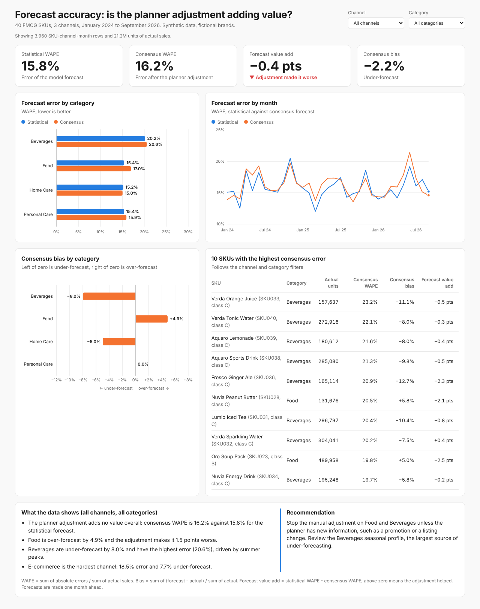

Forecast accuracy
Does the planner's adjustment make the statistical forecast better or worse? An FMCG case study with synthetic data.
- Tools
- Python (pandas), Excel, interactive dashboard built with Claude
- Data
- 40 SKUs, 3 channels, monthly, 2023 to 2026. Synthetic, fictional brands.
Problem statement
A fictional FMCG company sells 40 products in four categories (Personal Care, Home Care, Food, Beverages) through three channels (Modern Trade, Discounters, E-commerce). Every month the demand planners produce a statistical forecast, then adjust it by hand to create the consensus forecast that goes into the S&OP meeting.
Supply and finance cannot answer three questions:
- How accurate are the forecasts, and do they miss too high or too low?
- Which categories, channels and SKUs are the biggest problem?
- Is the planners' manual adjustment improving the statistical forecast, or wasting time?
Our approach
-
Load the data
Read
demand_monthly.csv(5,400 rows: one per SKU, channel and month, April 2023 to December 2026) and the product masterproducts.csv. Each row holds actual sales, the statistical forecast and the planner consensus forecast, made one month ahead. -
Clean and check
Checked for duplicate keys, missing forecasts, negative values and SKUs missing from the product master: none found. Removed the 360 rows for October to December 2026, which have forecasts but no actual sales yet. Kept 2023 as history for the models and scored from January 2024, which leaves 3,960 rows. Joined the SKU description and ABC class from the product master.
-
Create the KPIs
Calculated the forecast error for every row, then rolled it up by category, channel, month and SKU.
KPI Formula Reads as WAPE sum of absolute errors / sum of actual sales Lower is better Bias sum of (forecast - actual) / sum of actual sales Above 0 is over-forecast Forecast value add statistical WAPE - consensus WAPE Above 0 means the adjustment helped WAPE is weighted by volume, so small SKUs cannot distort the result the way they do in MAPE.
-
Validate in Excel
Rebuilt every KPI in an Excel workbook with live formulas on the same data (16,367 formulas, no errors). The Excel results match the Python results exactly.
-
Build the dashboard
One page that answers the three questions: four KPI tiles, error by category and by month, bias by category, and the ten worst SKUs. Channel and category filters recalculate every number, and each chart has a table view. The data sits inside the page, so it works without a server.
Result
- Statistical WAPE
- 15.8%
- Consensus WAPE
- 16.2%
- Forecast value add
- −0.4 pts
- Consensus bias
- −2.2%
Open the interactive dashboard, with channel and category filters, or download it as a PDF.

What the data shows
- The planner adjustment adds no value overall. Consensus error is 16.2% against 15.8% for the statistical forecast, so forecast value add is −0.4 points.
- Food is over-forecast by 4.9%, and the consensus is 1.5 points worse than the statistical forecast. This is where the adjustment hurts most.
- Beverages are under-forecast by 8.0% and have the highest error at 20.6%, because of summer peaks. The five worst SKUs are all low-volume beverages, led by orange juice at 23.2%.
- E-commerce is the hardest channel: 18.5% error and 7.7% under-forecast, with promotion and November peaks.
| Category | WAPE | Bias | Forecast value add |
|---|---|---|---|
| Beverages | 20.6% | −8.0% | −0.4 pts |
| Food | 17.0% | +4.9% | −1.5 pts |
| Home Care | 15.0% | −5.0% | +0.2 pts |
| Personal Care | 15.9% | 0.0% | −0.5 pts |
Recommendation
Stop the manual adjustment on Food and Beverages unless the planner has new information, such as a promotion or a listing change. Review the Beverages seasonal profile, the largest source of under-forecasting.